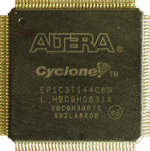

www.spetsialist-mx.ru
САЙТ О ПК "СПЕЦИАЛИСТ" И ЕГО КЛОНАХ
| |
|
| ГЛАВНАЯ | |
| МИКРОПРОЦЕССОР | |
| СИНХРОГЕНЕРАТОР | |
| ПАМЯТЬ | |
| ИНТЕРФЕЙС | |
| КЛОНЫ | |
| ПРОГРАММЫ | |
| ИГРЫ | |
| СПЕЦИАЛИСТ МХ | |
| ПЛИС | |
| ССЫЛКИ | |
| ОБРАТНАЯ СВЯЗЬ |

Используемая в ПК ПЛИС семейства Cyclone фирмы Altera (EP1C3T144C8) имеет следующие характеристики:
Количество макроячеек: 2910;
Напряжение питания: 1,5 В и 3,3 В;
Встроенная память используемая в качестве ПЗУ или ОЗУ: 59904 бит => 59904/8=7488 байт => 7488/1024=7 кБайт 320 байт;
Количество выводов (всего / ввода - вывода): 144/104;
Уровень сигналов ввода / вывода: 3,3 В;
Тип корпуса: TQFP (Thin Quard Flat Pack) 144 pin.
РЕАЛИЗАЦИЯ ПК НА ПЛИС
Постановка задачи. ПК "Специалист" Волкова состоит из: синхрогенератора, селектора адресов, процессора КР580ВМ80А, ППА клавиатуры / звука / магнитофона (К580ВВ55), 48 кБайт ОЗУ, 12 кБайт ПЗУ и ППА программатора (К580ВВ55). Дополнительно собирался контроллер 8 - ми цветов на ОЗУ 12 кБайт Х 3 бита. В ПК "Специалист_МХ" ОЗУ было увеличено до 48 + 512 кБайт, ПЗУ - до 48 кБайт. Был также добавлен таймер К580ВИ53 и контроллер дисковода на К1816ВГ93. Контроллер цвета стал уже 16 - ти цветным с ОЗУ на 12 кБайт Х 8 бит. Была возможность поменять процессор на Z80.
ПЛИС EP1C3T144C8 имеет в своём арсенале более 7 кБайт памяти. Разумно было бы использовать эту память под ОЗУ цвета (6 кБайт). Но для реализации ПК "Специалист_МХ" для ОЗУ цвета нужного объёма (12 кБайт) не хватило бы. Решено было разместить всё ОЗУ в двух ИМС снаружи ПЛИС - CY7C1021DV33 (используется конфигурация 64 кБайт Х 16 бит, применяется в качестве основного ОЗУ и ОЗУ цвета) и AS7C34096 (реализован RAM - диск на 512 кБайт). Под ПЗУ использована флеш - память на 512 кБайт AT49BV040B. Всё остальное (синхрогенератор, селектор адресов, процессор КР580ВМ80А, ППА клавиатуры / звука (К580ВВ55), таймер К580ВИ53, контроллер цвета) реализовано программно и "зашито" в ПЛИС. От записи / считывания на / с магнитофона и контроллера дисковода решено было отказаться как от изживших себя. Вместо него был введён считыватель SD карт (SPI интерфейс). ПК работает в двух устойчивых режимах - "Стандарт" и "МХ", повторяющих конфигурацию ПК Волкова и Афанасьева соответственно. В незанятое место внутри ПЛИС записаны тесты от Рюмика и RAM - диска. Одной из основных особенностей ПК вместо стандартной для ПК "Специалист" стало использование клавиатуры PS / 2 клавиатуры от ПК IBM PC.
В прошивке сэмуллирован процессор 8080 (К580ВМ80). Основной код отлаживался на Reverse U10 и портировался в данный проект.
| Назначение | Файл |
|---|---|
Схема ПК "Специалист MX_FPGA" |
newspets.png |
Исходники в формате Quartus 9.1 sp 2 |
newspets.rar |
Схема программатора "Byte Blaster" |
ByteBlaster.png |
Схема программатора "USB Blaster" |
USBBlaster.png |
"Прошивка" ПЛИС EP1C3T144C8 |
newspetsJIC.rar |
"Прошивка"флеш - ПЗУ AT49BV040B |
newspetsROMD.rar |